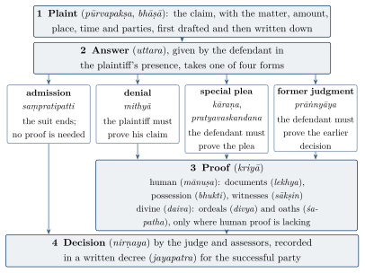

Chapter 12: Vyavahāra: Courts, Procedure and Proof¶
The Sanskrit word vyavahāra means, in ordinary usage, “dealing, transaction, business”. In the Dharmaśāstras it became the technical term for a lawsuit and for legal procedure, and by extension for the whole body of rules applied in litigation — what we would call law in the narrow sense. The smṛtis of Manu, Yājñavalkya and Nārada and the fragments of Bṛhaspati and Kātyāyana contain a detailed and increasingly sophisticated account of how disputes were to be brought before a court, how the parties were to state their cases, how facts were to be proved, and how judgments were to be given. The Arthaśāstra describes a parallel system of royal courts. This chapter sets out these rules: the courts and judges, the classification of lawsuits into eighteen titles, the stages of a trial, and the means of proof.
Two cautions apply. First, these are normative texts written by Brahmin scholars; they tell us how procedure was imagined, and only indirectly how cases were actually decided. Inscriptions and the few surviving records of medieval courts show a world of village assemblies, caste and guild bodies, temple authorities and royal officers who applied their own rules and customs alongside or instead of the śāstras (Chapter 16) (Davis 2010). Second, the procedural law of the śāstras, like their substantive law, was graded by varṇa and gender. Its technical achievements are considerable; equality before the law was no part of them, and to call the system one of “due process” is anachronistic (Lingat 1973).
12.1 The Courts¶
12.1.1 The King’s Court¶
In the Dharmaśāstras the king is the source of judicial authority. Manu instructs the king, wishing to examine lawsuits, to enter the court (sabhā) with Brahmins and experienced counsellors, and to decide the cases of the litigants each day, on the basis of the reasons that arise from the customs of regions and from the treatises (Manu 8.1–3). If he does not hear cases himself, he should appoint a learned Brahmin to do so, who should sit with three assessors (sabhya); such a court is called “the court of Brahmā” (8.9–11). The judge came to be called prāḍvivāka (“one who asks and decides”) and the assessors sabhya or sabhāsad. The court was attended by a clerk (lekhaka), an accountant (gaṇaka) and a bailiff or summoner (sādhyapāla), and the texts describe its sacred character: it was to be held in a hall facing east, and the judge and assessors were to be impartial.
The texts are explicit about who may judge. Manu states that a king may let even a Brahmin who lives only on his birth expound the law, but “never a Śūdra”; a king who looks on while a Śūdra decides the law finds his kingdom sinking “like a cow in the mud” (8.20–21). The assessors, like the judge, are to be learned Brahmins.
12.1.2 A Hierarchy of Tribunals¶
The later smṛtis recognise that most disputes were settled not by the king but by other bodies. Yājñavalkya lists, in ascending order of authority, the family (kula), the guild (śreṇī), the association (pūga) and the officials appointed by the king (Yājñ 2.30); Nārada gives a similar sequence — family, guild, corporation, the appointed judge and the king — each later body being superior to the earlier (Nārada 1.7). A case that had been decided by a lower body could be reconsidered by a higher one. The ordering does not describe a system of appellate courts in the modern sense; it records a hierarchy of authorities, each competent for its own community, under the ultimate authority of the king (Lingat 1973; Davis 2010).
12.1.3 The Arthaśāstra’s Courts¶
The Arthaśāstra describes royal courts organised territorially. Courts of “judges” (dharmastha), each composed of three judges and three ministers, are to be held in the frontier posts, the centres for groups of ten villages, and the district and provincial headquarters (AŚ 3.1.1); they decide private disputes under the titles of Book 3. A separate set of magistrates (pradeṣṭṛ), also sitting in threes, deals with the “removal of thorns” — the suppression of crime and of harmful conduct by artisans, merchants and officials — using secret agents and interrogation (AŚ 4.1). The text declares invalid transactions made in secret, inside a house, at night, in a forest, through fraud or in seclusion, except where such circumstances are inherent in the transaction, and it fines the parties and witnesses involved in them (AŚ 3.1). It also lays down that a lawsuit has four bases — dharma, transaction (vyavahāra), custom (caritra) and royal edict (rājaśāsana) — each later one overriding the earlier (AŚ 3.1.39); the Nāradasmṛti repeats the formula. In this hierarchy the king’s command stands above the texts — a point that sits uneasily with the claim that the king was always “under dharma” (Chapter 5).
12.2 The Eighteen Titles of Law¶
The classification of lawsuits into eighteen titles (vyavahārapada, “feet” or “grounds” of litigation), first found in the Manusmṛti (8.4–7), became standard in the later literature. The list, in Manu’s order, is given in Table 12.1.
| Sanskrit | Meaning | |
|---|---|---|
| 1 | ṛṇādāna | Non-payment of debts |
| 2 | nikṣepa | Deposits |
| 3 | asvāmivikraya | Sale by one who is not the owner |
| 4 | saṃbhūya-samutthāna | Partnership (joint undertakings) |
| 5 | dattasyānapakarma | Non-delivery or resumption of gifts |
| 6 | vetanādāna | Non-payment of wages |
| 7 | saṃvid-vyatikrama | Breach of agreement or convention |
| 8 | krayavikrayānuśaya | Rescission of sale and purchase |
| 9 | svāmipāla-vivāda | Disputes between the owner of cattle and the herdsman |
| 10 | sīmāvivāda | Boundary disputes |
| 11 | vākpāruṣya | Verbal assault (abuse, defamation) |
| 12 | daṇḍapāruṣya | Physical assault |
| 13 | steya | Theft |
| 14 | sāhasa | Violence (robbery, homicide and other violent crime) |
| 15 | strīsaṃgrahaṇa | Sexual offences against women (including adultery) |
| 16 | strīpuṃdharma | The law concerning husband and wife |
| 17 | vibhāga | Partition (inheritance) |
| 18 | dyūta and samāhvaya | Gambling and betting (on animal contests) |
Several observations follow. The first eight titles, which concern debts, deposits, sales, partnership, gifts, wages and agreements — eight of eighteen, or about 44 per cent — show how large commercial and contractual disputes loomed in the authors’ minds. The list mixes what modern law would separate into civil and criminal matters: theft, violence and sexual offences sit alongside debts and partition. Title 15 concerns sexual relations with women “belonging” to other men and is graded by varṇa (Chapter 14); title 16, on husband and wife, is less a law of marriage than a code of women’s duties. Later texts rearranged and renamed the titles: Nārada separates the breach of a contract of service from the non-payment of wages, adds a title on “miscellaneous” matters (prakīrṇaka) that includes offences against the king’s commands, and treats theft in an appendix. Bṛhaspati distinguishes fourteen titles “arising from wealth” and four “arising from injury”. The scheme was a teaching device for organising the material, not a code of causes of action (Olivelle 2005; Lariviere 1989).
12.3 The Course of a Lawsuit¶
12.3.1 The Four Parts¶
The later smṛtis describe a lawsuit as having four “feet” (pāda) or stages: the plaint (pūrvapakṣa, also pratijñā or bhāṣā); the answer (uttara); the proof (kriyā); and the decision (nirṇaya). This is a different use of the expression “four feet” from the four bases of decision (dharma, transaction, custom and edict) mentioned above, and the two should not be confused. Figure 12.1 shows how the four stages and the four kinds of answer fit together.

12.3.2 The Plaint¶
A suit begins when a person who has been wronged, or who claims a right, approaches the court. In civil matters the king or judge was not to start proceedings on his own initiative, though in certain grave offences he could act without a complainant. The plaintiff’s statement was to be precise: Kātyāyana and Bṛhaspati require that it state the matter in dispute, the amount, the place and time and the names of the parties, and that it be free of ambiguity, irrelevance and contradiction. It was first written provisionally (on a board or on the ground), corrected, and then recorded on a leaf or cloth. A plaint that was vague, that combined unrelated claims, or that concerned something impossible was to be rejected.
12.3.3 The Answer¶
The defendant, once summoned, gave his answer in the presence of the plaintiff. The smṛtis recognise four kinds of answer:
-
denial (mithyā): the defendant denies the claim;
-
admission (saṃpratipatti): he admits it, in which case the suit ends;
-
special plea (kāraṇa or pratyavaskandana): he admits the facts but pleads a circumstance that defeats the claim — for instance, that he received the money but has repaid it;
-
former judgment (prāṅnyāya): he pleads that the matter has already been decided in an earlier suit, in which he was successful.
An answer that was evasive, partial, contradictory or irrelevant was defective. The defendant was not allowed to bring a counter-suit against the plaintiff until the first suit was decided, with some exceptions (Yājñ 2.9). Parties who failed to appear, who fled, or who were shown to have lied were to lose the case and be fined; the Arthaśāstra lists a series of conduct that makes a party lose (AŚ 3.1).
12.3.4 Proof¶
Once the plaint and answer had fixed the issue, the court determined which party must prove his case. In a simple denial the burden lay on the plaintiff; in a special plea, on the defendant; with a plea of former judgment, on the defendant to prove the earlier decision. The means of proof are described below.
12.3.5 Decision¶
After weighing the evidence, the judge and assessors gave their decision, and the successful party received a written decree (jayapatra, “document of victory”), which was to record the plaint, the answer, the evidence, the reasoning and the result, and to be signed by the judge and assessors and sealed. The texts allow for the review of a decision that has been wrongly given: Yājñavalkya states that the king should review lawsuits badly decided and fine the assessors and the successful party (2.305). Manu holds that a matter once lawfully decided should be regarded as settled and not reopened (9.233), and that whatever has been given, enjoyed or written under compulsion is void (8.168).
Manu describes the moral weight of judgment in vivid terms. When justice is defeated by injustice, a quarter of the guilt falls on the wrongdoer, a quarter on the witness, a quarter on all the members of the court and a quarter on the king (8.18). “Justice, when violated, destroys; justice, when protected, protects” (dharma eva hato hanti dharmo rakṣati rakṣitaḥ, 8.15). Judges who decide cases for bribes are to have their property confiscated (9.231).
12.3.6 An Illustration¶
The working of these rules can be shown by a simple, constructed example of the kind the commentators themselves used. A merchant (the plaintiff) claims before the court that a cultivator owes him a hundred paṇas, lent a year earlier at a stated rate of interest. His plaint must state the amount, the date, the rate and the fact that the sum has not been repaid. If the cultivator answers that he never borrowed the money (denial), the merchant must prove the loan, by a written document attested by witnesses or by the testimony of witnesses present at the transaction. If the cultivator answers that he borrowed it but has repaid it (special plea), the burden passes to him to prove the repayment, for example by a receipt or an endorsement on the document. If he answers that the same claim has already been decided in his favour by a guild court or the village assembly (former judgment), he must prove that decision. If he admits the debt, the court orders payment, with interest within the limits allowed by law. In each case the judgment is written down and given to the successful party. The example shows how the classification of answers determined the burden of proof, an idea that the smṛtis expressed with considerable clarity.
12.4 The Means of Proof¶
12.4.1 Human and Divine Proof¶
Yājñavalkya states: “Document, possession and witnesses are declared to be the means of proof; in the absence of any of these, one of the ordeals is prescribed” (Yājñ 2.22). The later literature systematises this into human proof (mānuṣa) — documents, witnesses and possession — and divine proof (daiva), the ordeal and oath. It also allows for inference from circumstances (yukti, anumāna), especially in criminal cases.
12.4.2 Documents¶
The use of written documents (lekhya, likhita) is one of the most notable developments of the post-Manu period. Yājñavalkya and the later texts distinguish royal documents, such as land grants engraved on copper plates and royal decisions, from private documents written by the parties or by a scribe and attested by witnesses. They describe how a document recording a loan should be drawn up — with the names of the parties, the date, the amount and the rate of interest, the signatures of debtor and witnesses — and how a disputed document is to be tested by comparing handwriting, examining the witnesses and considering the circumstances. Kātyāyana and Bṛhaspati discuss forgery and the treatment of documents that have been lost or damaged. The prominence of documents in these texts reflects the growing use of writing in commerce and land transactions, also attested by inscriptions.
12.4.3 Possession¶
Long possession (bhukti, bhoga) was evidence of ownership, especially of land. Yājñavalkya lays down that an owner who watches his land being enjoyed by another for twenty years without objection loses it, and in the case of movables, ten years (Yājñ 2.24); Manu gives ten years for movables (8.147–148). These rules do not apply to pledges, boundaries, deposits, the property of minors, the king’s property and the property of women and learned Brahmins (8.149). Later texts distinguish possession with a title (āgama) from possession without one, and hold that possession for three generations is valid even without proof of title. These rules, which modern writers compare with prescription and limitation, were designed to settle titles to land in a society where written title was often lacking.
12.4.4 Witnesses¶
The longest discussions concern witnesses (sākṣin). Manu requires at least three witnesses in a lawsuit, who should be householders with sons, natives of the place, trustworthy and free from greed, and drawn from the same group as the parties: “Women should be witnesses for women; twice-born men of the same kind for twice-born men; virtuous Śūdras for Śūdras; and men of the lowest birth for those of the lowest birth” (8.68). Many persons are disqualified: those with an interest in the suit, friends, associates and enemies of the parties, persons previously convicted of perjury, the sick, the very old and the very young, and so on (8.64–67). Women are generally excluded as witnesses for men: “a single man free from greed may be a witness, but not many women, even if they are pure, because women’s understanding is unsteady” (8.77). Some later texts relax these rules: Nārada and others admit any person as a witness in cases of violence, theft, assault and adultery, where the event may have been seen only by a few.
Witnesses were examined in the court, before the parties, and exhorted to tell the truth with solemn warnings about the consequences of perjury in this world and the next (8.79–101). They were sworn according to varṇa (8.113; Chapter 2). Manu fixes graded fines for false testimony, ending with banishment (8.120–123). It also allows a witness to depart from the truth in one situation: where telling the truth would lead to the death of a man of any varṇa, a false statement is permitted, and the witness should afterwards perform a penance (8.103–105). Elsewhere it lists situations in which a false oath is not sinful, including in dealings with women, at marriages and to protect a Brahmin (8.112).
12.4.5 Interrogation and Torture¶
The Dharmaśāstras’ procedure is essentially for civil suits and for crimes prosecuted by a complainant. The Arthaśāstra’s procedure for suspected criminals is different: its magistrates arrest suspects on reports by secret agents and on circumstantial grounds, and may torture those who will not confess, within limits that the text sets out (AŚ 4.8). This procedure is described in Chapter 14.
12.5 Ordeals and Oaths¶
When human evidence was lacking, the texts allowed recourse to ordeals (divya). Yājñavalkya describes five: the balance (tulā), in which the accused was weighed twice and declared guilty if he was heavier the second time; fire (agni), in which he carried a heated iron ball across a series of circles; water (jala), in which he remained submerged while an arrow was shot and retrieved; poison (viṣa); and the sacred libation (kośa), in which he drank water in which images of a deity had been bathed and was judged guilty if he suffered misfortune within a fixed period (Yājñ 2.95ff.). Nārada and later texts add others, such as chewing rice grains and taking a coin out of hot oil. The Arthaśāstra, notably, does not rely on ordeals. The ordeal is the part of classical procedure that modern readers find hardest to take seriously, and it is often described as if it were an arbitrary appeal to chance. The texts present it instead as a closely regulated procedure, hedged with conditions of gravity, consent and status. Yājñavalkya restricts the five ordeals to grave accusations, and only where the accuser undertakes to bear the “head” (śīrṣaka) of the suit — that is, to suffer the penalty himself if the accused is cleared; only in cases of treason against the king and of grave sin may an ordeal be imposed without this undertaking (Yājñ 2.95–96). The ordeal is to be performed at sunrise, after the accused has fasted and bathed in his clothes, in the presence of the king and of Brahmins (2.97). The choice of ordeal depends on the person: the balance is prescribed for women, children, the aged, the blind, the lame, Brahmins and the sick, while a Śūdra is to undergo fire or water or a measured dose of poison (2.98); and the heated iron, the poison and the balance are not to be used where the sum in dispute is less than a thousand paṇas (2.99). The rules thus graded the risk of the ordeal by the gravity of the case and by the status of the accused — with the familiar consequence that the harshest forms fell on the Śūdra.
For lesser matters the texts prescribe oaths (śapatha), likewise graded by varṇa: Manu has a Brahmin swear by his truthfulness, a Kṣatriya by his mount and weapons, a Vaiśya by his cattle, seed and gold, and a Śūdra by all the grave sins (Manu 8.113). An oath was not a mere formality. A witness or party who swore falsely was expected to suffer misfortune, and some texts set a period within which such misfortune would reveal the perjurer — the same logic that underlies the ordeal of the sacred libation. The later digests devoted whole treatises to ordeals: Raghunandana’s Divyatattva in sixteenth-century Bengal sets out the procedure for each in detail, with the mantras to be recited and the signs of guilt and innocence (Kane 1930).
Ordeals are sometimes said to have “declined” as procedure was rationalised, but the medieval digests discuss them at great length, and there is evidence that they were actually used. Al-Bīrūnī, writing in the early eleventh century, describes Indian ordeals by poison, water, the balance and hot iron in his account of Indian lawsuits. The first volume of the Asiatick Researches, the journal of the Asiatic Society founded at Calcutta by William Jones, printed an account of trial by ordeal among the Hindus by ʿAlī Ibrāhīm Khān, the chief magistrate of Banaras, which shows that ordeals were still known and occasionally performed there in the late eighteenth century. In Travancore, Brahmins accused of grave offences could clear themselves by plunging a hand into boiling ghee at the temple of Śucīndram, a practice abolished by the Travancore government in the nineteenth century. The Company’s courts did not admit ordeals as proof, and colonial legislation replaced the religious oath — Hindus had at first sworn on Ganges water and Muslims on the Qurʾān — with the oath or affirmation prescribed by the Indian Oaths Act of 1873.
Medieval Europe also used ordeals of fire and water as “judgements of God” until the Fourth Lateran Council of 1215 forbade the clergy to take part in them. The parallel suggests a common function: where documents and witnesses failed, the ordeal produced a decision that the community could accept as final, and the long preparation it required gave room for confession, compromise or the withdrawal of the charge. In India it also expressed the conviction, already present in the Vedic literature (Chapter 2), that the gods protect the truthful.
12.6 Courts in Practice¶
How far did actual courts follow the procedure of the śāstras? Direct evidence is scarce before the second millennium CE, but inscriptions and later records give glimpses.
12.6.1 Inscriptions¶
Medieval South Indian inscriptions record the decisions of village and temple assemblies and of royal officers in disputes over land, temple property and offences. Several Cōḷa-period inscriptions record cases of accidental homicide — for example, a man killed by a stray arrow in a hunt — in which the assembly, after inquiry, required the person responsible to endow a perpetual lamp in a local temple rather than suffer a penalty; the transaction combined compensation, expiation and public record. Royal courts are also mentioned: Cōḷa inscriptions refer to a dharmāsana, a royal seat of justice, and to Brahmin experts (dharmāsana-bhaṭṭa) who sat in it (Nilakanta Sastri 1955). Donald Davis’s study of medieval Kerala records shows temple authorities and local assemblies deciding cases according to their own rules and customs, while using the vocabulary of dharma (Davis 2004).
12.6.2 Documents of Decision¶
A few later documents preserve the decisions of assemblies of Brahmins (dharmasabhā) and other bodies on questions of caste status, penance, inheritance and marriage. In Maharashtra under the Peśvās, for example, disputes were frequently referred to pañcāyats of the parties’ peers, whose decisions were recorded and enforced by government officers (Chapter 16). Such records show the śāstras being invoked, interpreted and sometimes set aside in favour of custom, and they show that procedure in practice was often more informal and more consensual than the texts’ model of plaint, answer, proof and decision.
12.6.3 Islamic and Colonial Courts¶
From the thirteenth century, qāḍīs’ courts and the courts of royal officials operated in much of northern India, and many Hindus as well as Muslims used them to register transactions and settle disputes (Chapter 18). The colonial courts established from 1772 introduced a new procedure based on English models; their rules of pleading and evidence, codified in the Code of Civil Procedure and the Indian Evidence Act of 1872, owed nothing directly to the śāstras, although colonial judges sometimes noted resemblances.
12.7 Bringing a Defendant to Court¶
A lawsuit could not proceed without the defendant, and the texts discuss how he was to be brought before the court. The ordinary means was a summons issued by the king’s court, delivered by an officer or conveyed by a seal. Nārada also describes a form of private restraint (āsedha) by which a plaintiff could, in the king’s name, forbid a defendant to leave a place, to depart on a journey or to carry on an activity until he had answered the claim; a defendant who disobeyed a lawful restraint was punishable, while a plaintiff who imposed an unlawful one was himself liable (Lariviere 1989). The texts exempt certain persons from being summoned or restrained at particular times: among others, those about to marry, those afflicted by illness or grief, those engaged in sacrifice, and cultivators at the time of harvest.
To secure the parties’ continued presence and the execution of the judgment, the courts required sureties (pratibhū). The smṛtis distinguish sureties for appearance, sureties for good faith and sureties for payment, with different degrees of liability, and discuss whether the sons of a deceased surety are bound to pay (Kane 1930). Sureties appear frequently in medieval documents, which suggests that the institution was in common use.
12.8 Representation and Costs¶
The Dharmaśāstras do not know a profession of advocates in the modern sense. Parties were expected to plead in person. The later smṛtis, however, allow a party who is unable to plead — because of youth, illness, absence or inexperience — to be represented by a relative or an appointed agent, whose acts bind the principal; Kātyāyana discusses such representatives and their remuneration (Kane 1930; Lingat 1973). Under the Mughals, agents called vakīl represented parties before the qāḍī and other officials, and the East India Company’s courts licensed Indian pleaders, also called vakīls, from the late eighteenth century; the modern Indian legal profession, with its advocates trained in English law, grew out of these colonial institutions (Chapter 19).
The classical courts were not free to litigants. The king took a share of the sum recovered in a suit for debt, and the losing party paid a fine in addition to what he owed; a defendant who falsely denied a debt that was then proved against him paid more than one who admitted it. The texts justify these payments as compensation to the king for the labour of justice and as a deterrent to false claims and false denials. They also show awareness that litigation could be used to harass: a plaintiff who brought a false suit was to be fined, and a case once properly decided was not to be reopened, although a judgment obtained by force, fraud or the corruption of the judges could be set aside and heard again (punarnyāya) (Davis 2010).
12.9 The Language of the Courts¶
The Dharmaśāstras were written in Sanskrit, but the courts they describe heard litigants who spoke the languages of everyday life. The texts assume that the plaint was recorded in writing by a scribe, and the surviving legal documents of medieval India are written in Sanskrit, in regional languages such as Tamil, Kannada, Telugu and Marathi, or in mixtures of these; the records of the Peśvā period in Maharashtra mentioned above, for example, are in Marathi. Law was thus applied through a constant process of translation between the learned language of the śāstras and the spoken languages of the parties.
Under the Delhi Sultanate and the Mughals, Persian became the language of administration and of the higher courts, and Islamic legal texts were in Arabic. The East India Company at first continued to use Persian in its courts. Act XXIX of 1837 ended the official use of Persian and allowed the regional languages to replace it in the lower courts, while English became the language of the higher courts. The choice of script then became a political question: in the North-Western Provinces, the order of 1900 permitting petitions in the Devanāgarī script as well as the Persian script used for Urdu was a milestone in the Hindi–Urdu controversy, which contributed to the separation of Hindu and Muslim political identities.
The Constitution of India provides that the proceedings of the Supreme Court and the High Courts, and the authoritative texts of laws, shall be in English until Parliament provides otherwise (Article 348), while the lower courts use the official languages of the states. The question of the language of justice — whether litigants can follow the proceedings that decide their rights — thus remains a live issue, as it was when Sanskrit-trained judges heard disputes among villagers who knew no Sanskrit.
12.10 The Judge¶
All the texts stress the qualities of the judge and assessors: learning in the Veda and the treatises, truthfulness, impartiality, freedom from anger and greed, and courage. Nārada and Kātyāyana describe how the assessors should speak out if the king or judge is about to decide wrongly, and say that an assessor who remains silent, or speaks falsely, incurs sin. Judges are not to hold private conversations with a party, and those who take bribes or decide out of partiality are to be punished. Bṛhaspati’s warning that a decision should not be made by the letter of the śāstra alone, because a judgment devoid of reasoning destroys dharma, was often quoted.
These are serious ideals, and they show a developed understanding of the conditions of fair adjudication. Like other features of the tradition, they assume a court of Brahmin experts applying a law that gave different weight to the testimony and interests of different varṇas and of men and women.
12.11 Assessment¶
The Dharmaśāstra law of procedure is one of the most technically developed parts of classical Indian learning. Its analysis of the stages of a suit, of the kinds of plea and of the burden of proof, its rules for documents and possession, and its insistence on written decisions show a mature legal culture. Modern writers have drawn parallels with Roman civil procedure, with the English forms of pleading and with the Indian Code of Civil Procedure of 1908; none of them implies historical continuity, for the modern Indian law of procedure and evidence was built on English models (Chapter 19). The classical system was also bound up with the hierarchy of varṇa and gender, which determined who could judge, who could testify for whom and how witnesses were sworn. A balanced account must recognise both its technical achievement and the social order it served.
12.12 Principal Passages¶
Table 12.2 lists the principal passages discussed in this chapter.
| Passage | Subject |
|---|---|
| Manu 8.1–3, 8.9–11 | The king’s court; the Brahmin judge with three assessors |
| Manu 8.4–7 | The eighteen titles of law |
| Manu 8.15, 8.18 | Dharma destroys when violated; the division of guilt for an unjust judgment |
| Manu 8.20–21 | A Śūdra never to expound the law |
| Manu 8.60–68, 8.77 | Number and qualification of witnesses; witnesses by varṇa and sex |
| Manu 8.103–105, 8.112, 8.113 | Permitted falsehood; oaths without sin; oaths by varṇa |
| Manu 8.147–149 | Loss of title by others’ enjoyment; exceptions |
| Manu 8.168; 9.233 | Transactions under compulsion void; finality of a lawful decision |
| Yājñ 2.9 | No counter-suit before the first suit is decided |
| Yājñ 2.22 | Documents, possession and witnesses; ordeals in their absence |
| Yājñ 2.24 | Twenty years for land, ten for movables |
| Yājñ 2.30 | Family, guild, association and royal officials as tribunals |
| Yājñ 2.95ff. | The five ordeals |
| Yājñ 2.305 | Review of cases badly decided |
| Nārada 1.7 | Family, guild, corporation, judge and king |
| AŚ 3.1 | Courts of three judges; invalid secret transactions; the four bases of a lawsuit (3.1.39) |
| AŚ 4.1, 4.8 | Magistrates for the “removal of thorns”; interrogation and torture |
12.13 Summary¶
-
In the Dharmaśāstras the king is the source of judicial authority; he decides cases himself or through a learned Brahmin judge with Brahmin assessors. Śūdras may not judge. Families, guilds and associations decide cases within their own spheres, under the king’s authority.
-
A lawsuit has four parts — plaint, answer, proof and decision; the kind of answer decides who must prove what. Proof is by documents, possession and witnesses, with ordeals and oaths in their absence; the rules on witnesses are graded by varṇa and sex.
-
Inscriptions and later records show local assemblies, temple bodies, royal officers and qāḍīs deciding cases in ways that drew on, but did not simply apply, the śāstric model.
Further Reading¶
The main texts are Manu chapter 8 (Olivelle 2005), Yājñavalkya Book 2 (Olivelle 2019), and the Nāradasmṛti (Lariviere 1989); AŚ Books 3–4 (Olivelle 2013). Kane (1930), vol. 3, gives a detailed account of procedure and evidence; Lingat (1973) and Davis (2010) discuss the relation between procedure and practice.